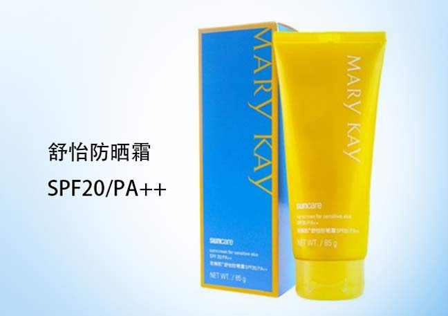
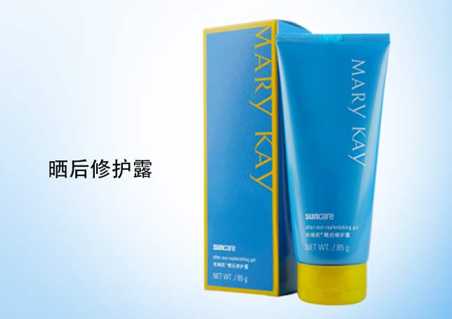

紫外线照射不仅会使肌肤晒黑、晒伤，而且它对肌肤的伤害是一年四季的，甚至阴天雨天都不会减少。因此想要肌肤白皙、水润、年轻，就一定要趁早使用防晒产品，防患于未然。同时，晒后修护很重要！
紫外线对皮肤的伤害还会令皮肤发热、发红，甚至还会有脱皮。所以想要进行日晒修护。首先要给皮肤降温，让皮肤清凉舒缓，减轻发红发热的状况，也减轻敏感的刺激。其次要给皮肤多多补水，因为晒后皮肤被夺走大量水分，如同晒后会口渴一样，肌肤也很干渴。其次晒后修护的产品一定要温和安全，因为这时皮肤还很脆弱易于敏感哦。
在享受灿烂阳光的同时，玫琳凯防晒系列能有效保护我们娇嫩的肌肤并且在晒后修护受损肌肤。

防水防汗配方，有效抵御紫外线UVA/UVB，并提供SPF20的防晒保护。不含化学防晒剂的物理防晒霜，性质温和，同样适用于敏感性肤质，是你一年四季不可错过的随身好伴侣！

清爽的蓝色晒后修护露，富含多种皮肤舒缓植物精华，易被皮肤快速吸收，能为皮肤补充所需的水份，令皮肤感觉光滑清新。